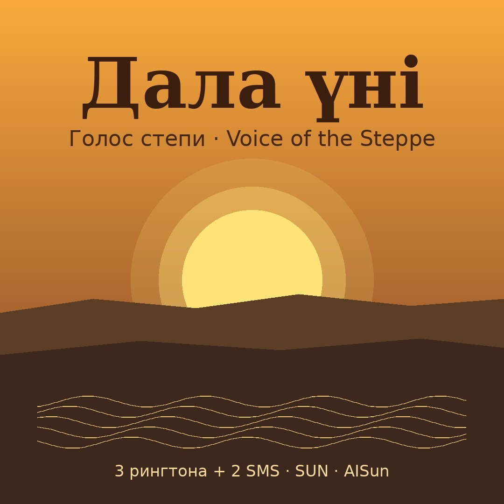

Дала үні
Мелодии степи от AISun
Steppe melodies by AISun
О наборе — 77 оригинальных мелодий на звонок и SMS: голоса домбры, қобыза и сыбызғы. Созданы AISun в Астане, в каждой мелодии один голос.
About — 77 original tones for calls and messages: the voices of the dombra, kobyz and sybyzgy flute. Created by AISun in Astana, one voice per tone. The archive has MP3, M4R (iPhone) and OGG (Android) folders, a catalog of all tones and a short guide to setting a ringtone.
Кез келген карта, Қазақстан да / Любая карта, Казахстан тоже / Any card, any country.
Төлегеннен кейін файлдар бірден келеді / Файлы сразу после оплаты / Files right after payment.
▶ Барлығын тыңдау / Послушать все 77 / Listen to all 77 →
Сатып алу / Купить / Buy — $9Қалай алуға болады: батырманы басыңыз, картамен төлеңіз — архив (77 әуен, MP3 · M4R · OGG папкалары) бірден Gumroad-тан жүктеледі және поштаңызға келеді.
Как получить: нажмите кнопку, оплатите картой — архив со всеми 77 мелодиями (папки MP3 · M4R · OGG) скачивается сразу в Gumroad и приходит на почту. Без кодов, чеков и ботов.
How to get it: tap the button, pay by card — download the archive with all 77 tones (MP3 · M4R · OGG folders) right on Gumroad; it also comes to your email. No codes.
MP3 · M4R (iPhone) · OGG (Android). Музыка оригинальная / Original music: Khamzin Bauyrzhan Galymzhanovich и AISun · ИП SUN / IP SUN, Астана / Astana.
Хотите поговорить? / Want to talk?
Оставьте имя и телефон — Бауржан перезвонит или напишет в WhatsApp. Обычно в тот же день (10:00–21:00, Астана).
Leave your name and phone — Baurzhan will call or message you on WhatsApp, usually the same day (10:00–21:00 Astana time).